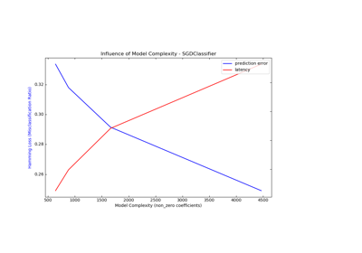

sklearn.metrics.hamming_loss¶
-
sklearn.metrics.hamming_loss(y_true, y_pred, labels=None, sample_weight=None)[source]¶ Compute the average Hamming loss.
The Hamming loss is the fraction of labels that are incorrectly predicted.
Read more in the User Guide.
- Parameters
- y_true1d array-like, or label indicator array / sparse matrix
Ground truth (correct) labels.
- y_pred1d array-like, or label indicator array / sparse matrix
Predicted labels, as returned by a classifier.
- labelsarray, shape = [n_labels], optional (default=’deprecated’)
Integer array of labels. If not provided, labels will be inferred from y_true and y_pred.
New in version 0.18.
Deprecated since version 0.21: This parameter
labelsis deprecated in version 0.21 and will be removed in version 0.23. Hamming loss usesy_true.shape[1]for the number of labels when y_true is binary label indicators, so it is unnecessary for the user to specify.- sample_weightarray-like of shape = [n_samples], optional
Sample weights.
New in version 0.18.
- Returns
- lossfloat or int,
Return the average Hamming loss between element of
y_trueandy_pred.
See also
Notes
In multiclass classification, the Hamming loss corresponds to the Hamming distance between
y_trueandy_predwhich is equivalent to the subsetzero_one_lossfunction, whennormalizeparameter is set to True.In multilabel classification, the Hamming loss is different from the subset zero-one loss. The zero-one loss considers the entire set of labels for a given sample incorrect if it does not entirely match the true set of labels. Hamming loss is more forgiving in that it penalizes only the individual labels.
The Hamming loss is upperbounded by the subset zero-one loss, when
normalizeparameter is set to True. It is always between 0 and 1, lower being better.References
- 1
Grigorios Tsoumakas, Ioannis Katakis. Multi-Label Classification: An Overview. International Journal of Data Warehousing & Mining, 3(3), 1-13, July-September 2007.
- 2
Examples
>>> from sklearn.metrics import hamming_loss >>> y_pred = [1, 2, 3, 4] >>> y_true = [2, 2, 3, 4] >>> hamming_loss(y_true, y_pred) 0.25
In the multilabel case with binary label indicators:
>>> import numpy as np >>> hamming_loss(np.array([[0, 1], [1, 1]]), np.zeros((2, 2))) 0.75
Examples using sklearn.metrics.hamming_loss¶
